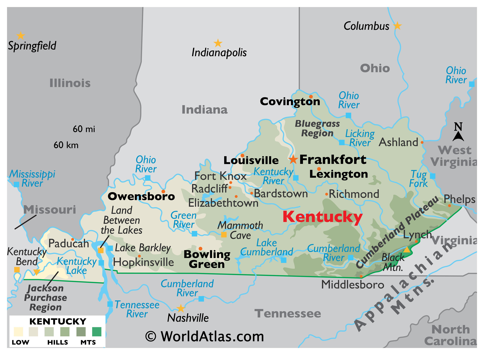

The Bluegrass State

Kentucky is a state located in the southeastern region of the United States. It is known for its horse racing, bourbon distilleries, and bluegrass music. The state has a rich history and culture, with many attractions and landmarks to explore.
